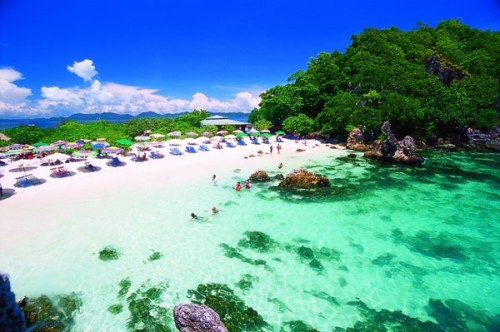

 |
| อันดับ 6 : เกาะพีพี กระบี่
เลื่อง ชื่อแห่งท้องทะเลกระบี่ที่โด่งดังเป็นที่ประจักษ์กับสายตาชาวโลกมาแล้ว ธรรมชาติงดงามลงตัว ทั้งชายหาดขาว น้ำทะเลใส วิวสวย และเป็นอ่าวที่ซุกซ่อนตัวอยู่ในแนวกำบังของกำแพงผา ทำให้อ่าวมาหยาเหมาะอย่าง ยิ่งกับการใช้เวลาที่แสนสงบ ดื่มด่ำกับธรรมชาติ และเผยความในใจกับคู่รักแบบมีสายลม แสงแดด และภูผา เป็นพยานก็โรแมนติกไปอีกแบบ ทั้งนี้เกาะพีพีได้จัดเป็นเกาะที่มีความสวยงาม ติดอันดับ 1 ใน 10 ของโลก โดยมีเอกลักษณ์ คือ การโค้งของอ่าวที่ตีวงเข้าหากัน และมีหาดทรายคั่นตรงกลาง นอกจากนี้ เกาะพีพียังเป็นที่นิยมของนักท่องเทียวที่จะมา ดำน้ำ เพื่อจะดูปะการังอีกด้วย |